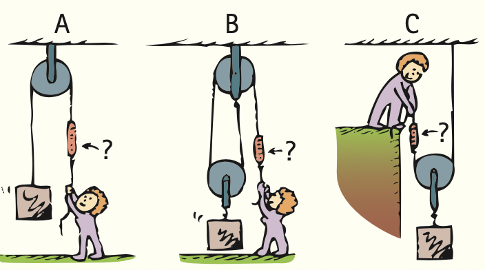
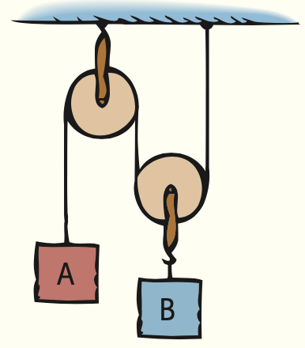
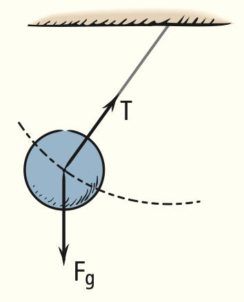

Summary of Terms (Knowledge)
Work The product of the force and the distance moved by Work–energy theorem The work done on an object equals
the force: the change in the kinetic energy of the object:
W = Fd Work = DKE
(More generally, work is the component of force in the (Work can also transfer other forms of energy to a system.)
direction of motion times the distance moved.)
Law of conservation of energy Energy cannot be created
Power The time rate of work: or destroyed; it may be transformed from one form into
work done another, but the total amount of energy never changes.
Power =
time interval Machine A device, such as a lever or pulley, that increases
(More generally, power is the rate at which energy is (or decreases) a force or simply changes the direction of
expended.) a force.
Energy The property of a system that enables it to do work. Conservation of energy The work output of any machine
cannot exceed the work input. In an ideal machine,
Mechanical energy Energy due to the position of something where no energy is transformed into thermal energy,
or the movement of something. work input = work output; (Fd )input = (Fd )output.
Potential energy Energy that something possesses because Lever A simple machine consisting of a rigid rod pivoted at a
of its position. fixed point called the fulcrum.
Kinetic energy Energy that something possesses because of Efficiency The percentage of the work put into a machine
its motion, quantified by the relationship that is converted into useful work output. (More
1 generally, useful energy output divided by total energy
Kinetic energy = mv 2
2 input.)
Reading Check Questions (Comprehension)
7.1 Work 9. When is the potential energy of something significant?
1. When is energy most evident?
7.3 Kinetic Energy
2. A force sets an object in motion. When the force is multiplied
10. When the speed of a moving car is doubled, how much
by the time of its application, we call the quantity impulse,
more kinetic energy does it have?
and an impulse changes the momentum of that object. What
do we call the quantity force multiplied by distance? 7.4 Work–Energy Theorem
3. Cite an example in which a force is exerted on an object 11. Compared with a car moving at some original speed,
without doing work on the object. how much work must the brakes of a car supply to stop
4. Which requires more work: lifting a 50-kg sack a vertical a car that is moving twice as fast? How will the stopping
distance of 2 m or lifting a 25-kg sack a vertical distance distances compare?
of 4 m? 12. If you push a crate horizontally with 100 N across a 10-m
5. Exactly what is it that enables an object to do work? factory floor and the friction between the crate and the
6. If both sacks in the preceding question are lifted their floor is a steady 70 N, how much kinetic energy does the
respective distances in the same time, how does the crate gain?
power required for each compare? How about for the case 13. How does speed affect the friction between a road and a
in which the lighter sack is moved its distance in half the skidding tire?
time?
7.5 Conservation of Energy
7.2 Potential Energy 14. What will be the kinetic energy of a pile driver ram that
7. A car is raised a certain distance in a service-station lift starts from rest and undergoes a 10-kJ decrease in poten-
and therefore has potential energy relative to the floor. tial energy?
If it were raised twice as high, how much more potential 15. An apple hanging from a limb has potential energy
energy would it have? because of its height. If it falls, what becomes of this
8. Two cars are raised to the same elevation on service- energy just before it hits the ground? When it hits the
station lifts. If one car is twice as massive as the other, ground?
compare their gains of potential energy.
C H APTER 7 R e v i e w 127
16. What is the source of energy in sunshine? 7.7 Efficiency
17. What is recycled energy? 21. What is the efficiency of a machine that miraculously
converts all the input energy to useful output energy?
7.6 Machines
22. If an input of 100 J in a pulley system increases the
18. Can a machine multiply input force? Input distance? potential energy of a load by 60 J, what is the efficiency
Input energy? (If your three answers are the same, seek of the system?
help; the last question is especially important.)
19. If a machine multiplies force by a factor of 4, what other 7.8 Sources of Energy
quantity is diminished, and by how much? 23. What is the ultimate source of energy for fossil fuels,
20. A force of 50 N is applied to the end of a lever, which dams, and windmills?
is moved a certain distance. If the other end of the 24. What is the ultimate source of geothermal energy?
lever moves one-third as far, how much force can it 25. Can we correctly say that hydrogen is a new source of
exert? energy? Why or why not?
Think and Do (Hands-On Application)
26. Pour some dry sand into a tin can that has a cover. Com-
pare the temperature of the sand before and after you
vigorously shake the can for a minute or so. Predict what
will occur. What is your explanation?
27. Do as physics instructor Fred Cauthen does and place
a tennis ball close to and above the top of a basketball.
Drop the balls together. If their vertical alignment nicely
remains as they fall to the floor, you’ll see that the tennis
ball bounces unusually high. Can you reconcile this with
energy conservation?
Plug and Chug (Equation Familiarization)
Work = force × distance: W = Fd 35. Show that the gravitational potential energy of a 1000-kg
28. Calculate the work done when a force of 5 N moves a boulder raised 5 m above ground level is 50,000 J. (You can
book 1.2 m. (Remember that 1 N?m 5 1 J.) express g in units of N/kg because m/s2 is equivalent to N/kg.)
29. Show that 2.4 J of work is done when a force of 2.0 N 1 1
moves a book 1.2 m. Kinetic energy = Rolin mass × speed²: KE = mv2
Graphics
2 2
30. Calculate the work done when a 20-N force pushes a cart 36. Show that the kinetic
energy of a 1.0-kg book tossed
3.5 m. across the room at a speed of 3.0 m/s is 4.5 J. (1 J is
31. Calculate the work done in lifting a 500-N barbell 2.2 m equivalent to 1 kg?m/s2.)
above the floor. (What is the gain of potential energy of 37. Calculate the kinetic energy of an 84-kg scooter moving
the barbell when it is lifted to this height?) at 10 m/s.
Power = work/time: P = W/t Work-energy theorem: Work = ΔKE
32. Show that 50 W of power is required to give a brick 100 J 38. Show that 24 J of work is done when a 3.0-kg block of ice
of PE in a time of 2 s. is moved from rest to a speed of 4.0 m/s.
33. Show that about 786 W of power is expended when a 39. Show that a 2,500,000-J change in kinetic energy occurs
500-N barbell is lifted 2.2 m above the floor in 1.4 s. for an airplane that is moved 500 m in takeoff by a sus-
tained force of 5000 N.
Gravitational potential energy
useful energy output
5 weight : height: PE 5 mgh Efficiency =
total energy input
34. Show that when a 3.0-kg book is lifted 2.0 m its increase
in gravitational potential energy is 60 J. 40. Show that a machine that has an input of 100 J and an
output of 40 J is 40% efficient.
Think and Solve (Mathematical Application)
41. The second floor of a house is 6 m above the street level. 47. In raising a 5000-N piano with a pulley system, the
How much work is required to lift a 300-kg refrigerator workers note that for every 2 m of rope pulled down-
to the second-story level? ward, the piano rises 0.2 m. Ideally, show that 500 N is
42. (a) How much work is done when you push a crate hori- required to lift the piano.
zontally with 100 N across a 10-m factory floor? (b) If 48. In the hydraulic machine shown, you observe that when
the force of friction on the crate is a steady 70 N, show the small piston is pushed down 10 cm, the large piston
that the KE gained by the crate is 300 J. (c) Show that is raised 1 cm. If the small piston is pushed down with
700 J is turned into heat. a force of 100 N, what is the most weight that the large
43. This question is typical on some driver’s license exams: piston can support?
A car that was moving at 50 km/h skids 15 m with
locked brakes. How far will the car skid with locked ?
brakes if it was moving at 150 km/h?
44. Belly-flop Bernie dives from atop a tall flagpole into a
swimming pool below. His potential energy at the top is
10,000 J (relative to the surface of the pool). What is his
kinetic energy when his potential energy is reduced to
1000 J? 49. How many watts of power do you expend when you exert
a force of 50 N that moves a crate 8 m in a time interval
45. Nellie Newton applies a force of 50 N to the end of a of 4 s?
lever, which is moved a certain distance. If the other end
of the lever moves one-third as far, show that the force it 50. Emily holds a banana of mass m over the edge of a
exerts is 150 N. bridge of height h. She drops the banana and it falls to
the river below. Use conservation of energy to show that
46. Consider an ideal pulley system. If you pull one end of
the speed of the banana just before hitting the water is
the rope 1 m downward with a 50-N force, show that
you can lift a 200-N load one-quarter of a meter high. v = √2gh.
Think and Rank (Analysis)
51. The mass and speed of the three vehicles, A, B, and C, are 53. The roller coaster ride starts from rest at point A. Rank
shown. Rank them from greatest to least for the following: these quantities from greatest to least at each point:
a. Momentum a. Speed
b. Kinetic energy b. KE
c. Work done to bring them up to their respective speeds c. PE
from rest
2.0 m/s A
8.0 m/s
1.0 m/s E
A B C
C
B
D
800 kg 1000 kg 90 kg
54. Rank the scale readings from highest to lowest. (Ignore
52. A ball is released from rest at the left of the metal track
friction.)
shown here. Assume it has only enough friction to roll,
but not to lessen its speed. Rank these quantities from
greatest to least at each point: A B C
a. Momentum
b. KE
c. PE ?
? ?
A
B D
C
C H APTER 7 R e v i e w 129

Think and Explain (Synthesis)
55. Why is it easier to stop a lightly loaded truck than a 70. Does the International Space Station have gravitational
heavier one that has equal speed? PE? KE? Explain.
56. Why do you do no work on a 25-kg backpack when you 71. What does the work–energy theorem say about the speed
walk a horizontal distance of 100 m? of a satellite in circular orbit?
57. If your friend pushes a lawnmower four times as far as 72. A moving hammer hits a nail and drives it into a wall.
you do while exerting only half the force, which one of If the hammer hits the nail with twice the speed, how
you does more work? How much more? much deeper will the nail be driven? If the hammer hits
58. Why does one get tired pushing against a stationary wall with three times the speed?
when no work is done on the wall? 73. Why does the force of gravity do no work on (a) a bowl-
59. Which requires more work: stretching a strong spring ing ball rolling along a bowling alley and (b) a satellite in
a certain distance or stretching a weak spring the same circular orbit about Earth?
distance? Defend your answer. 74. Why does the force of gravity do work on a car that rolls
60. Two people who weigh the same climb a flight of stairs. down a hill but no work when it rolls along a level part of
The first person climbs the stairs in 30 s, and the second the road?
person climbs them in 40 s. Which person does more 75. Does the string that supports a pendulum bob do work
work? Which uses more power? on the bob as its swings to and fro? Does the force of
61. In determining the potential energy of Tenny’s drawn gravity do any work on the bob?
bow (see Figure 7.10), would it be an underestimate or 76. A crate is pulled across a horizontal floor by a rope. At
an overestimate to multiply the force with which she the same time, the crate pulls back on the rope, in accord
holds the arrow in its drawn position by the distance she with Newton’s third law. Does the work done on the
pulls it back? Why do we say the work done is average crate by the rope then equal zero? Explain.
force * distance? 77. On a playground slide, a child has potential energy that
62. When a rifle with a longer barrel is fired, the force of decreases by 1000 J while her kinetic energy increases by
expanding gases acts on the bullet for a longer distance. 900 J. What other form of energy is involved, and how
What effect does this have on the velocity of the emerg- much?
ing bullet? (Do you see why long-range cannons have 78. Someone who wants to sell you a Superball claims that
such long barrels?) it will bounce to a height greater than the height from
63. Your friend says that the kinetic energy of an object which it is dropped. Can this be?
depends on the reference frame of the observer. Explain 79. Why can’t a Superball released from rest reach its original
why you agree or disagree. height when it bounces from a rigid floor?
64. You and a flight attendant toss a ball back and forth in 80. Consider a ball thrown straight up in the air. At what
an airplane in flight. Does the KE of the ball depend on position is its kinetic energy at a maximum? Where is its
the speed of the airplane? Carefully explain. gravitational potential energy at a maximum?
65. You watch your friend take off in a jet plane, and you 81. Discuss the design of the roller coaster shown in the
comment on the kinetic energy she has acquired. But she sketch in terms of the conservation of energy.
says she experiences no such increase in kinetic energy.
Who is correct? ?
66. When a jumbo jet slows and descends on the approach to
landing, there is a decrease in both its kinetic and poten-
tial energy. Where does this energy go?
67. Explain how “elastic potential energy” dramatically
changed the sport of pole vaulting when flexible fiber- 82. Suppose that you and two classmates are discussing the
glass poles replaced stiffer wooden poles. design of a roller coaster. One classmate says that each
68. At what point in its motion is the KE of a pendulum bob summit must be lower than the preceding one. Your
at a maximum? At what point is its PE at a maximum? other classmate says this is nonsense, for as long as the
When its KE is at half its maximum value, how much PE first one is the highest, it doesn’t matter what height the
does it have relative to its PE at the center of the swing? others are. What do you say?
69. A physics instructor demonstrates energy 83. When the girl in Figure 7.17 jacks up a car, how can apply-
conservation by releasing a heavy pen- ing so little force produce sufficient force to raise the car?
dulum bob, as shown in the sketch, and 84. What famous equation by Albert Einstein describes the
allowing it to swing to and fro. What relationship between mass and energy?
would happen if, in his exuberance, he 85. When the mass of a moving object is doubled with
gave the bob a slight shove as it left his no change in speed, by what factor is its momentum
nose? Explain. changed? By what factor is its kinetic energy changed?
86. When the velocity of an object is doubled, by what and short blades. Bolt cutters have very long handles
factor is its momentum changed? By what factor is its and very short blades. Why is this so?
kinetic energy changed? 94. An inefficient machine is said to “waste energy.” Does
87. Which, if either, has greater momentum: a 1-kg ball this mean that energy is actually lost? Explain.
moving at 2 m/s or a 2-kg ball moving at 1 m/s? Which 95. If an automobile were to have a 100%-efficient engine,
has greater kinetic energy? transferring all of the fuel’s energy to work, would the
88. A car has the same kinetic energy when traveling engine be warm to your touch? Would its exhaust heat
north as when it turns around and travels south. Is the the surrounding air? Would it make any noise? Would it
momentum of the car the same in both cases? vibrate? Would any of its fuel go unused?
89. If an object’s KE is zero, what is its momentum? 96. Your friend says that one way to improve air quality in a
90. If your momentum is zero, is your kinetic energy neces- city is to have traffic lights synchronized so that motor-
sarily zero also? ists can travel long distances at constant speed. What
91. If two objects have equal kinetic energies, do they neces- physics principle supports this claim?
sarily have the same momentum? Defend your answer. 97. The energy we require to live comes from the chemically
92. Two lumps of clay with equal and opposite momenta stored potential energy in food, which is transformed
have a head-on collision and come to rest. Is momen- into other energy forms during the metabolism process.
tum conserved? Is kinetic energy conserved? Why are What happens to a person whose combined work and heat
your answers the same or different? output is less than the energy consumed? What happens
when the person’s work and heat output is greater than the
93. Scissors for cutting paper have long blades and short
energy consumed? Can an undernourished person perform
handles, whereas metal-cutting shears have long handles
extra work without extra food? Defend your answers.

Think and Discuss (Evaluation)
98. Discuss whether or not, once used, energy can be regen- 103. The Sun puts out twice as much solar energy in 2 hours
erated. Is your reasoning consistent with the common as it does in 1 hour. But the solar power of the Sun is the
term renewable energy? same from one hour to the next. Distinguish between
99. Discuss what international peace, cooperation, and secu- the terms solar energy and solar power.
rity have to do with addressing the world’s energy needs. 104. If a golf ball and a Ping-Pong ball both move with the
100. Consider the identical balls released from rest on tracks same kinetic energy, can you say which has the greater
A and B, as shown. When they reach the right ends speed? Explain in terms of the definition of KE. Simi-
of the tracks, which will have the greater speed? Why larly, in a gaseous mixture of heavy molecules and light
is this question easier to answer than the similar one molecules with the same average KE, can you say which
(Think and Discuss 95) in Chapter 3? have the greater speed?
105. Running a car’s air conditioner usually increases fuel
consumption. But, at certain speeds, a car with its win-
A dows open and with the air conditioner turned off can
B consume more fuel. Discuss and explain.
106. Discuss why one should even bother to use a machine
101. Does a car burn more gasoline when its lights are if it cannot multiply work input to achieve greater work
turned on? Does the overall consumption of gasoline output. What, then, is the use of a machine?
depend on whether or not the engine is running while
107. You tell your friend that no machine can possibly put
the lights are on? Discuss this, and defend your answer.
out more energy than is put into it, and your friend
102. Suppose an object is set sliding, with a speed less than states that a nuclear reactor puts out more energy than
escape velocity, on an infinite frictionless plane in con- is put into it. What is your response?
tact with the surface of Earth, as shown. Describe its
108. This may seem like an easy question for a physics type
motion. (Will it slide forever at a constant velocity? Will
to answer: With what force does a rock that weighs
it slide to a stop? In what way will its energy changes be
10 N strike the ground if it is dropped from a rest
similar to that of a pendulum?)
position 10 m high? In fact, the question cannot be
answered unless you know more. Discuss why this is so.
v v 109. Your discussion partner is confused about ideas dis-
cussed in Chapter 4 that seem to contradict ideas dis-
cussed in this chapter. For example, in Chapter 4, we
learned that the net force is zero for a car traveling along
a level road at constant velocity, but in this chapter, we
learned that work is done in such a case. Your discussion
C H APTER 7 R e v i e w 131
friend asks, “How can work be done when the net force 118. Consider a bob attached by a string, a simple pendulum,
equals zero?” Discuss your explanation. that swings to and fro. (a) Why doesn’t the tension force
110. In the absence of air resistance, a ball thrown verti- in the string do work on the pendulum? (b) Explain,
cally upward with a certain initial KE will return to its however, why the force due to gravity on the pendulum
original level with the same KE. When air resistance is at nearly every point does do work on the pendulum.
a factor affecting the ball, will it return to its original (c) What is the single position of the pendulum where
level with the same, less, or more KE? Does your answer “no work by gravity” occurs?
contradict the law of energy conservation?
111. You’re on a rooftop and you throw one ball downward to
the ground below and another upward. The second ball,
after rising, falls and also strikes the ground below. If
air resistance can be ignored, and if your downward and T
upward initial speeds are the same, how will the speeds
of the balls compare upon striking the ground? (Use the
idea of energy conservation to arrive at your answer.)
112. In the pulley system shown,
block A has a mass of 10 kg Fg
and is suspended precariously
at rest. Assume that the pulleys 119. Consider a satellite in a circular orbit above Earth’s sur-
and string are massless and face. In Chapter 10 we will learn that the force of grav-
there is no friction. No friction ity changes only the direction of motion of a satellite in
means that the tension in one circular motion (and keeps it in a circle); it does NOT
part of the supporting string is change the satellite’s speed. Work done on the satellite by
the same as at any other part. A the gravitational force is zero. What is your explanation?
Discuss why the mass of block B
120. Consider the swinging-balls apparatus. If two balls are
B is 20 kg.
lifted and released, momentum is conserved as two
113. Going uphill, the gasoline engine in a gasoline–electric balls pop out the other side with the same speed as the
hybrid car provides 75 horsepower while the total power released balls at impact. But momentum would also
propelling the car is 90 horsepower. Burning gasoline be conserved if one ball popped out at twice the speed.
provides the 75 horsepower. Discuss what provides the Discuss why this never happens. (And explain why this
other 15 horsepower. exercise is in Chapter 7 rather than in Chapter 6.)
114. When a driver applies the brakes to keep a car going
downhill at constant speed and constant kinetic energy,
the potential energy of the car decreases. Where does
this energy go? In contrast, discuss where most of it goes
with a hybrid vehicle.
115. Does the KE of a car change more when it goes from 10
to 20 km/h or when it goes from 20 to 30 km/h?
116. Can something have energy without having momen-
tum? Explain. Can something have momentum without
having energy? Discuss and defend your answer.
117. No work is done by gravity on a bowling ball that is
resting or moving on a bowling alley because the force
of gravity on the ball acts perpendicular to the surface.
But on an incline, the force of gravity has a vector
component parallel to the alley, as in B. How does this 121. To combat wasteful habits, we often speak of “conserv-
component account for (a) the acceleration of the ball ing energy,” by which we mean turning off lights and
and (b) the work done on the ball to change its kinetic hot water when they are not being used and keeping
energy? thermostats at a moderate level. In this chapter, we also
speak of “energy conservation.” Discuss and distinguish
between these two phrases.
122. When an electric company can’t meet its customers’
demand for electricity on a hot summer day, should the
problem be called an “energy crisis” or a “power crisis”?
A B Discuss.





Image Review Notes
Think and Do 27 was omitted because no matching captured image was supplied. Basketball and tennis ball drop photograph/illustration.
Plug and Chug / review photo was omitted because no matching captured image was supplied. Small basketball-related photo on the Plug and Chug page.
Think and Solve 48 was omitted because no matching captured image was supplied. Hydraulic-machine sketch beside the piston question.
Think and Discuss 120 was omitted because no matching captured image was supplied. Swinging-balls apparatus / Newton cradle image.